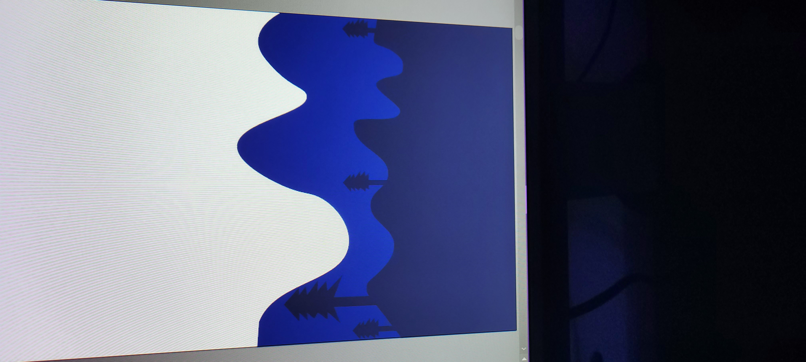
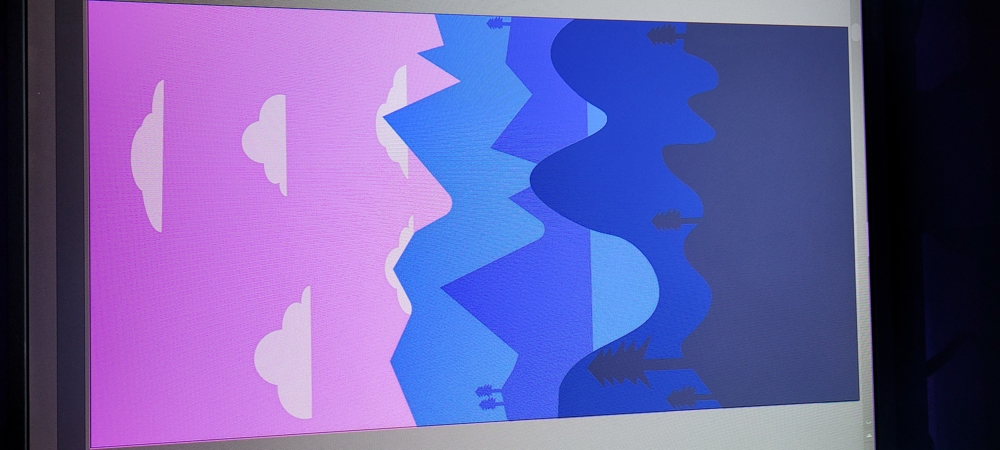
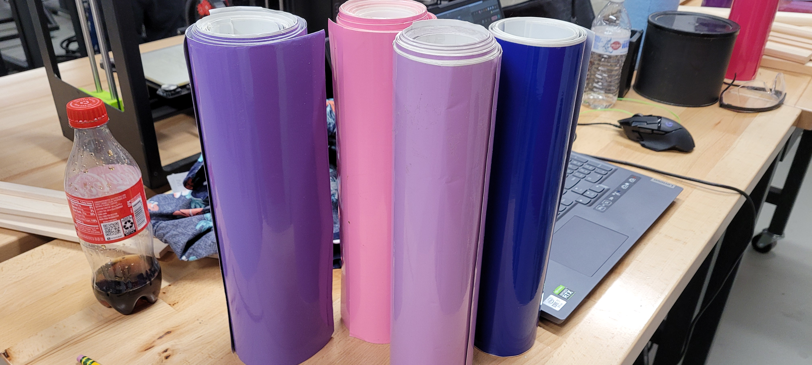
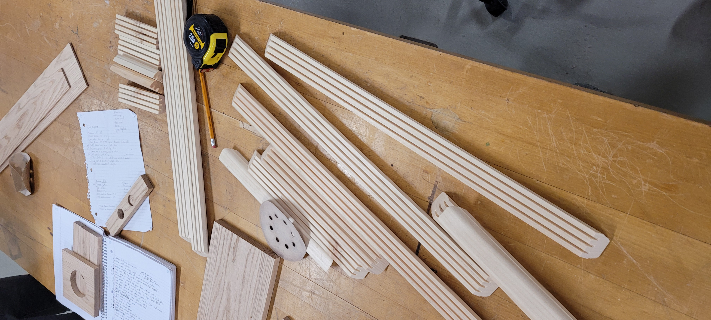
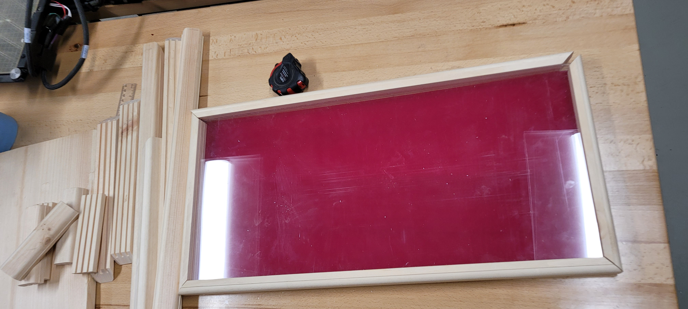

Vector Art Sign
December 2022

This was my final project of a "materials and processes" class I had the pleasure of taking at NC State.
We had as much creative freedom in this class as you could ask for. So, I wanted to see if I could make a layered vector art sign.
I was slightly limited on (provided) materials for this project, so this did change the final appearance. Either way, I am appreciative of the experience I got while making this. Woodworking is not a great skill of mine and it's something I hope to improve upon.
Extra pictures from the design process




